相关组件概念
Operator
参照：红帽官方文档什么是 Kubernetes Operator？
当在 Kubernetes 上管理复杂的应用或服务时，仅仅使用核心资源(如 Pod、Deployment、Service) 可能不足以满足需求。这时，可以使用Operator，它是一种自定义控制器的模式，可以让我们以更高级别的方式定义、部署和管理这些复杂的应用或服务。
想象一下，如果你要管理一个特定的应用程序或服务，你需要考虑很多方面，比如如何安装、配置、扩展、更新和监控等。Operator 可以帮助你将这些管理任务自动化，并以一种更抽象的方式定义应用程序的行为和状态。
Operator 的核心概念是自定义资源和控制器。你可以定义自己的自定义资源，以描述应用程序的特定行为和属性。然后，你编写一个自定义控制器，它会观察自定义资源的变化，并采取相应的操作来确保应用程序的状态保持在你期望的状态。
举个例子，假设你有一个复杂的数据库应用程序。你可以创建一个自定义资源来描述该数据库应用程序的配置、备份策略等。然后，你编写个自定义控制器，它会监视该自定义资源的状态，并根据定义的策略执行数据库备份、调整容量等操作。使用 Operator的好处是，让你能够以一种更高级别的方式管理应用程序。你不再需要手动执行复杂的操作，而是通过定义自定义资源和控制器来实现自动化管理。
总之，Operator 是一种在 Kubernetes 上管理复杂应用或服务的方式，它通过自定义资源和控制器的组合，让你能够以更高级别的方式定义、部署和管理应用程序，并自动化执行管理任务。这样，你可以更轻松地管理复杂的应用程序，并享受到自动化管理带来的好处，
CRD 全称是 Custom Resource Definition, CRD是一种无需编码就可以扩展原生kubenetes API接口的方式。适合扩展kubernetes的自定义接口和功能。如果想更为灵活的添加逻辑就需要API Aggregation方式.
kubebuilder
Kubebuilder 是一个开发工具集，它的作用是帮助开发人员更轻松地在 Kubernetes 上构建、管理和发布 Operator。可以把 Kubebuilder 想象成开发人员的助手，它提供了一些方便的工具和框架，使得在 Kubernetes 中创建自定义的Operator 变得更加容易。
Kubebuilder 允许你定义自己的资源类型。你可以告诉 Kubbuilder 这个新资源的属性、行为和操作方式。然后，Kubebuilder 会为你生成相应的代码，帮助你构建这个自定义资源。除了帮助你创建资源，它还可以生成控制器代码，这样你可以定义资源的逻辑行为。它还可以帮助你验证资源的正确性，并提供一些工具来简化测试和部署过程。
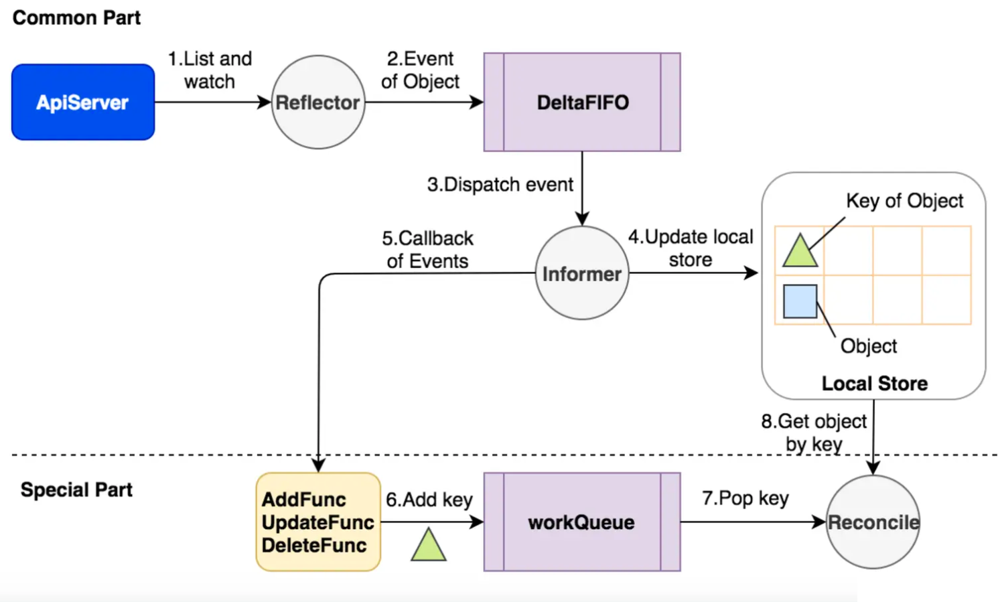
架构图：
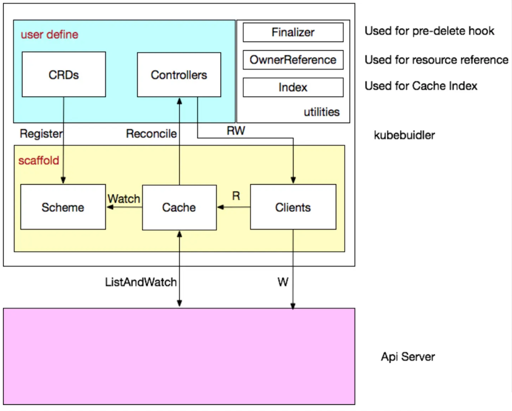
基本相关概念：
| GVK (GroupVersionKind)GVR (GroupVersionResource) | API Group & Versions（GV） API Group 是相关 API 功能的集合，每个 Group 拥有一或多个 Versions，用于接口的演进。Kinds & Resources（GVR） 每个 GV 都包含多个 API 类型，称为 Kinds，在不同的 Versions 之间同一个 Kind 定义可能不同， Resource 是 Kind 的对象标识（resource type），一般来说 Kinds 和 Resources 是 1:1 的，比如 pods Resource 对应 Pod Kind，但是有时候相同的 Kind 可能对应多个 Resources，比如 Scale Kind 可能对应很多 Resources：deployments/scale，replicasets/scale，对于 CRD 来说，只会是 1:1 的关系 |
|---|---|
| Scheme | 每一组 Controllers 都需要一个 Scheme，提供了 Kinds 与对应 Go types 的映射，也就是说给定 Go type 就知道他的 GVK，给定 GVK 就知道他的 Go type |
| Manager | Kubebuilder 的核心组件，职责：负责运行所有的 Controllers；初始化共享 caches，包含 listAndWatch 功能；初始化 clients 用于与 Api Server 通信。 |
| Cache | Kubebuilder 的核心组件，负责在 Controller 进程里面根据 Scheme 同步 Api Server 中所有该 Controller 关心 GVKs 的 GVRs，其核心是 GVK -> Informer 的映射，Informer 会负责监听对应 GVK 的 GVRs 的创建/删除/更新操作，以触发 Controller 的 Reconcile 逻辑。 |
| Controller | Kubebuidler 为我们生成的脚手架文件，我们只需要实现 Reconcile 方法即可。 |
| Client | 在实现 Controller 的时候不可避免地需要对某些资源类型进行创建/删除/更新，就是通过该 Clients 实现的，其中查询功能实际查询是本地的 Cache，写操作直接访问 Api Server。 |
| Index | 由于 Controller 经常要对 Cache 进行查询，Kubebuilder 提供 Index utility 给 Cache 加索引提升查询效率。 |
| Finalizer | 在一般情况下，如果资源被删除之后，我们虽然能够被触发删除事件，但是这个时候从 Cache 里面无法读取任何被删除对象的信息，这样一来，导致很多垃圾清理工作因为信息不足无法进行，K8s 的 Finalizer 字段用于处理这种情况。在 K8s 中，只要对象 ObjectMeta 里面的 Finalizers 不为空，对该对象的 delete 操作就会转变为 update 操作，具体说就是 update deletionTimestamp 字段，其意义就是告诉 K8s 的 GC“在deletionTimestamp 这个时刻之后，只要 Finalizers 为空，就立马删除掉该对象” |
| OwnerReference | K8s GC 在删除一个对象时，任何 ownerReference 是该对象的对象都会被清除，与此同时，Kubebuidler 支持所有对象的变更都会触发 Owner 对象 controller 的 Reconcile 方法。 |
开发 Operator 时最常用的两种框架如下表所示：
| Kubebuilder | 官方维护、轻量级、Go 原生脚手架工具，快速生成项目框架，减少样板代码。 | 快速构建单体 Operator从零开始、完全掌控自己 Go 项目结构，且不需要过多上层生态工具的开发 |
|---|---|---|
| Operator SDK | Red Hat 维护，支持 Helm/Ansible（通过插件），底层直接使用 Kubebuilder (将其作为库调用)，包含 Kubebuilder 的所有能力。- Operator Lifecycle Manager (OLM) 集成：方便打包、安装和管理 Operator。- Scorecard 工具：对 Operator 进行静态和动态测试，验证最佳实践。 | 企业级 Operator 管理与发布需要为 Operator 提供完整的生命周期管理（如发布到 OperatorHub），或希望使用 Ansible/Helm 等非 Go 语言来编写 Operator 逻辑。 |
通过 Kubebuilder 来实现 Operator 大致可分为以下步骤：
- 1）初始化项目
- 2）创建 API，并填充字段
- 3）实现 Controller，编写核心调谐逻辑(Reconcile)
- 4）(可选)创建 Webhook，并实现接口
- 5）本地调试，验证测试
- 6）构建镜像并生成 yaml,发布到集群
kustomize
一个 Kubernetes 原生的配置管理工具，它允许用户定制和模板化 Kubernetes 应用的配置。Kustomize 被设计用来解决多个环境中配置的差异化问题，例如开发、测试和生产环境。它通过使用 Kubernetes 清单文件（YAML格式）的集合来实现这一点，使得用户可以重用和定制配置。
通过Base和Overlays的方式来维护不同环境的应用配置。Base描述了共享的内容，如资源和常见的资源配置，而Overlays则修改（并因此依赖于）Base，声明了与Base之间的差异。通过这种方式，Kustomize能够轻松地在多个环境中复用和定制Kubernetes配置。
Kubebuilder实战
常用的开发工具有一下几种：
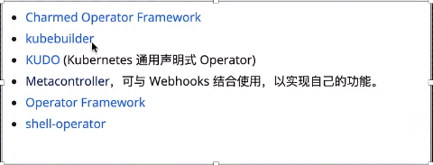
环境：centos7.9 、go 1.18、 kubebuilder3.14.1、 kustomize3.5.0、kubernetes1.23.6
注意：一定看一下go 版本 与开发工具对应版本，以及与kubernetes的版本
安装kubebuilder/kustomize
https://github.com/kubernetes-sigs/kubebuilder/releases
注意版本：我这里k8s集群是1.23的
以下操作均在linux下执行：
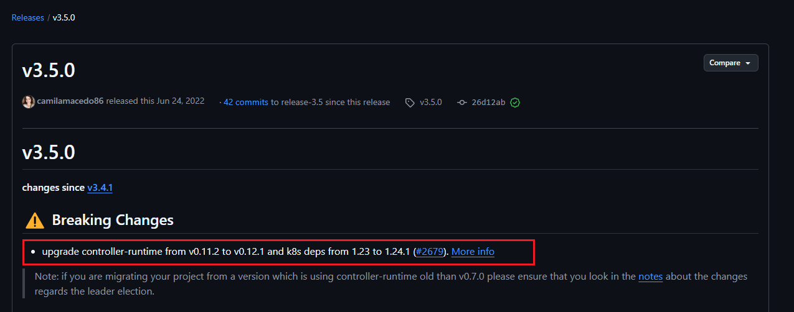
wget https://github.com/kubernetes-sigs/kubebuilder/releases/download/v3.5.0/kubebuilder_linux_amd64
mv kubebuilder_linux_amd64 /usr/bin/kubebuilder
chmod +x /usr/bin/kubebuilder
kubebuilder version
Version: main.version{KubeBuilderVersion:"3.5.0", KubernetesVendor:"1.24.1", GitCommit:"26d12ab1134964dbbc3f68877ebe9cf6314e926a", BuildDate:"2022-06-24T12:17:52Z", GoOs:"linux", GoArch:"amd64"}
kustomize: https://github.com/kubernetes-sigs/kubebuilder/releases
wget https://github.com/kubernetes-sigs/kustomize/archive/refs/tags/kustomize/v4.5.7.tar.gz
tar zxvf kustomize_v4.5.5_linux_amd64.tar.gz
chmod +x kustomize
mv kustomize /usr/bin/kustomize
kustomize version
{Version:kustomize/v4.5.7 GitCommit:56d82a8378dfc8dc3b3b1085e5a6e67b82966bd7 BuildDate:2022-08-02T16:35:54Z GoOs:linux GoArch:amd64}
创建并初始化项目
初始化名为kube-oprator1的项目：
mkdir operator-1 && cd operator-1
go mod init kuke-operator-1
初始化参数：
- init: 初始化命令参数。
- -domain: 指定项目的域名。域名一般是您的公司、组织或个人的域名，它将用于生成资源的 API 组API Group)。在这个例子中域名被设置为lanvulei.com，则生成的资源API Group 将是lanyulei.com。
- -repo: 项目名称，若是当前项目下已经存在go.mod，则无需此参数。
[root@k8s-master1 operator]# kubebuilder init --plugins go/v3 --domain anyoperator.com --repo operator
Writing kustomize manifests for you to edit...
Writing scaffold for you to edit...
Get controller runtime:
$ go get sigs.k8s.io/controller-runtime@v0.12.1
Update dependencies:
$ go mod tidy
go: downloading github.com/stretchr/testify v1.7.0
go: downloading github.com/onsi/ginkgo v1.16.5
go: downloading github.com/onsi/gomega v1.18.1
go: downloading github.com/go-logr/zapr v1.2.0
go: downloading go.uber.org/zap v1.19.1
go: downloading github.com/pmezard/go-difflib v1.0.0
go: downloading github.com/Azure/go-autorest/autorest v0.11.18
go: downloading github.com/Azure/go-autorest v14.2.0+incompatible
go: downloading github.com/Azure/go-autorest/autorest/adal v0.9.13
go: downloading go.uber.org/goleak v1.1.12
go: downloading go.uber.org/atomic v1.7.0
go: downloading go.uber.org/multierr v1.6.0
go: downloading github.com/benbjohnson/clock v1.1.0
go: downloading gopkg.in/check.v1 v1.0.0-20200227125254-8fa46927fb4f
go: downloading github.com/Azure/go-autorest/logger v0.2.1
go: downloading github.com/Azure/go-autorest/tracing v0.6.0
go: downloading github.com/Azure/go-autorest/autorest/mocks v0.4.1
go: downloading github.com/Azure/go-autorest/autorest/date v0.3.0
go: downloading github.com/form3tech-oss/jwt-go v3.2.3+incompatible
go: downloading golang.org/x/crypto v0.0.0-20220214200702-86341886e292
go: downloading cloud.google.com/go v0.81.0
go: downloading github.com/nxadm/tail v1.4.8
go: downloading github.com/niemeyer/pretty v0.0.0-20200227124842-a10e7caefd8e
go: downloading golang.org/x/xerrors v0.0.0-20200804184101-5ec99f83aff1
go: downloading gopkg.in/tomb.v1 v1.0.0-20141024135613-dd632973f1e7
go: downloading github.com/kr/text v0.2.0
Next: define a resource with:
$ kubebuilder create api
生成目录结构如下：
tree
.
├── config
│ ├── default
│ │ ├── kustomization.yaml
│ │ ├── manager_auth_proxy_patch.yaml
│ │ └── manager_config_patch.yaml
│ ├── manager
│ │ ├── controller_manager_config.yaml
│ │ ├── kustomization.yaml
│ │ └── manager.yaml
│ ├── prometheus
│ │ ├── kustomization.yaml
│ │ └── monitor.yaml
│ └── rbac
│ ├── auth_proxy_client_clusterrole.yaml
│ ├── auth_proxy_role_binding.yaml
│ ├── auth_proxy_role.yaml
│ ├── auth_proxy_service.yaml
│ ├── kustomization.yaml
│ ├── leader_election_role_binding.yaml
│ ├── leader_election_role.yaml
│ ├── role_binding.yaml
│ └── service_account.yaml
├── Dockerfile
├── go.mod
├── go.sum
├── hack
│ └── boilerplate.go.txt
├── main.go
├── Makefile
├── PROJECT
└── README.md
开启支持多接口组(在项目目录下执行)
kubebuilder edit --multigroup=true
创建API(在项目目录下执行)
创建我们需要的api group
kubebuilder create api --group myapp1 --version v1 --kind Demo
# --group: 接口分组
# --version： 接口版本
# --kind 对应k8s资源对象中的Kind
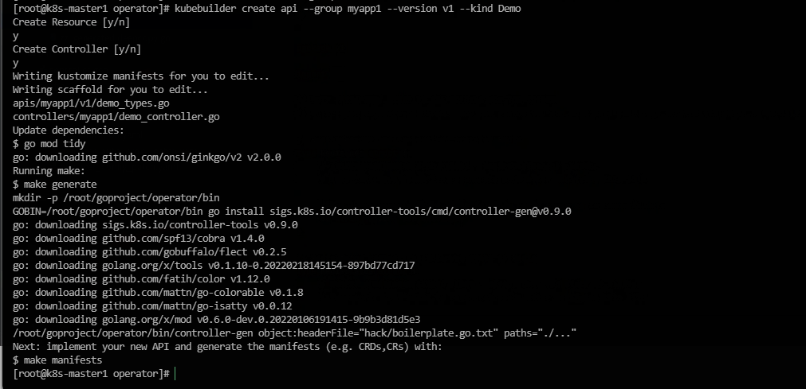
目录结构如下
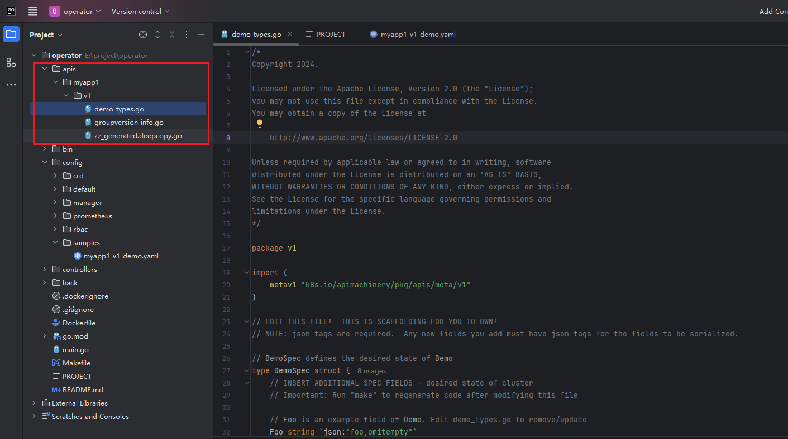
注意: 关于 domain group version kind对应 :
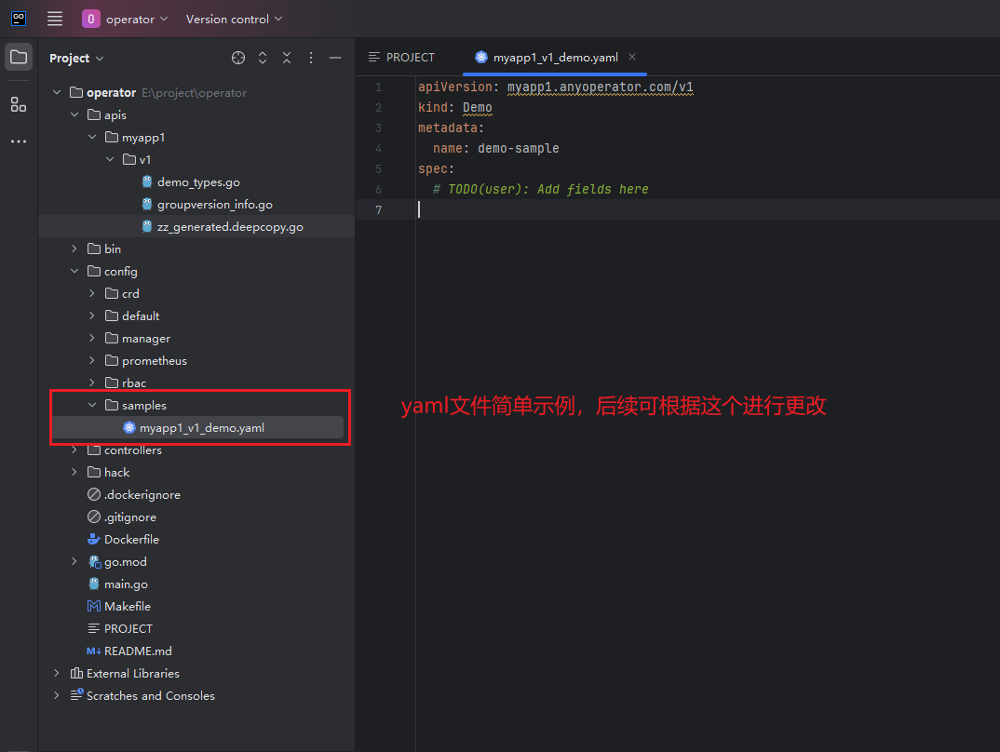
简单创建一个crd
自定义资源
apis/v1/demo_types.go
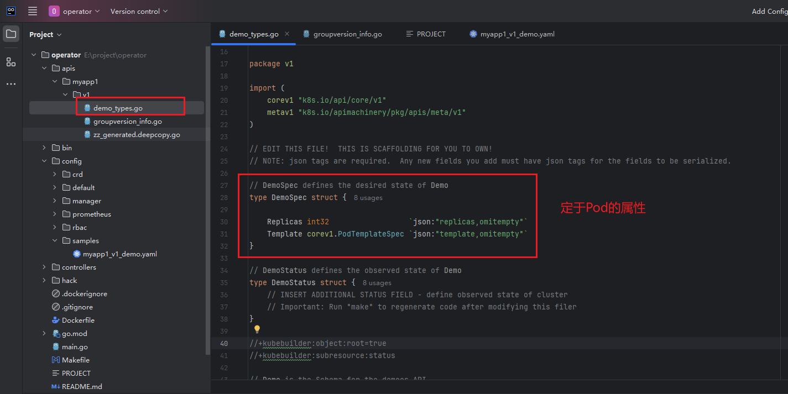
// DemoSpec defines the desired state of Demo
type DemoSpec struct {
Replicas *int32 `json:"replicas,omitempty"`
Template corev1.PodTemplateSpec `json:"template,omitempty"`
}
- Replicas ：用于声明Pod副本的数量
- Template： 用于声明Pod模版的配置
CRD部署
- make manifests
在修改好 demo_types.go 文件中的 DemoSpec 后,我们可以通过执行 make manifests 命令来生成所需的 ClusterRole和CustomResourceDefinition (CRD) 配置。
执行 make manifests 后，会生成两个文件: config/rbac/role.yaml和config/crd/bases/myapp1.anyoperator.com_demoes.yaml
config/rbac/role.yaml: 定义了一个ClusterRole，它是一个管理角色，负责管理相应资源。在这个文件中，我们定义了对Demo资源的 CURD (创建、更新、读取和删除) 等操作。config/crd/bases/myapp1.anyoperator.com_demoes.yaml: 是 Demo 资源的 CRD 配置文件。它描述了 Demo 资源的结构和属性，以及对应的 API版本和 API 分组。这个文件定义了我们创建的自定义资源的规范和行为。通过执行make manifests，我们能够自动生成这些必需的配置文件，以便后续在 Kubernetes 集群中部署和使用我们的自定义资源role.vaml 定义了资源的角色和权限，而myapp1.anyoperator.com_demoes.yaml则定义了资源的规范和行为。
这样，我们可以根据生成的配置文件继续进行部署和管理我们的自定义资源
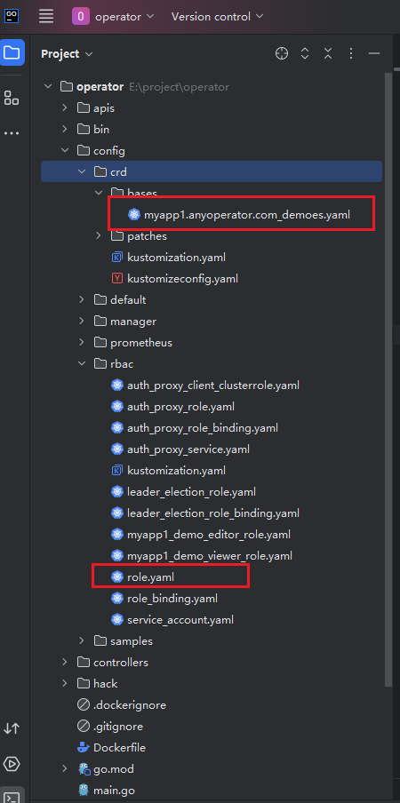
- make install
执行 make install 的操作是将自定义资源定义 (CRD) 音署到 Kubernetes 集群中。通过运行这个命令，CRD 的定义将被应用并注册到义资源。Kubernetes 中，使 Kubernetes 能够理解和处理对应的自定义资源。
需要注意的是，执行 make install 时，通常会包含执行 make manifests 的步骤。make manifests 用于生成 Kubernetes 部署所需配置、服务账户和角色绑定等的清单文件(manifests)，其中包括 CRD 的定义、控制器的配置、服务账户和角色绑定等。
因此，通过将 make install和 make manifests 分开操作，可以更清晰地解释其中的具体过程。首先，执行 make manifests 生成所需要的清点文件。然后执行 make install 将这些清单文件应资源用到 Kubernetes 集群中。这样，CRD 的定义将生效，并且可以开始使用自定义需的清单文件。
注意：其实Makefile文件中是直接调用的kubectl客户端工具，如当前机器kubectl不可用，也将执行失败
接下来就可以使用 kubectl 命令来查看刚刚部署的 CRD 了
注意：make install的时候可能会报错：make: *** [/root/goproject/operator/bin/kustomize] Error 56，多尝试几次即可
[root@k8s-master1 operator]# make install
/root/goproject/operator/bin/controller-gen rbac:roleName=manager-role crd webhook paths="./..." output:crd:artifacts:config=config/crd/bases
curl -s "https://raw.githubusercontent.com/kubernetes-sigs/kustomize/master/hack/install_kustomize.sh" | bash -s -- 3.8.7 /root/goproject/operator/bin
{Version:kustomize/v3.8.7 GitCommit:ad092cc7a91c07fdf63a2e4b7f13fa588a39af4f BuildDate:2020-11-11T23:14:14Z GoOs:linux GoArch:amd64}
kustomize installed to /root/goproject/operator/bin/kustomize
/root/goproject/operator/bin/kustomize build config/crd | kubectl apply -f -
customresourcedefinition.apiextensions.k8s.io/demoes.myapp1.anyoperator.com created
[root@k8s-master1 operator]# kubectl get crd |grep demo
demoes.myapp1.anyoperator.com 2024-11-24T06:56:05Z
[root@k8s-master1 operator]# kubectl api-resources|grep demo
demoes myapp1.anyoperator.com/v1 true Demo
到此，自定义资源已经部署到k8s集群当中
创建自定义资源
创建一个示例的demo.yaml文件，从config/samples/myapp1_v1_demo.yaml文件中拷贝模板，并修改
kind: Demo
metadata:
name: demo-sample
namespace: default
labels:
app: demo-sample
spec:
replicas: 2
template:
spec:
containers:
- name: nginx
image: nginx:latest
ports:
- containerPort: 80
apply创建，并查看对应的资源
[root@k8s-master1 yaml]# kubectl apply -f demo.yaml
demo.myapp1.anyoperator.com/demo-sample created
[root@k8s-master1 yaml]# kubectl get demo
NAME AGE
demo-sample 74s
到此，因为还没有创建控制器去控制创建并管理pod，所以还没有pod的信息
自定义控制器controller
接下来的任务是完成自定义控制器的开发。开发自定义控制器非常简单，只需要在 Reconcile() 方法中编写你的业务代码即可，其他的与 Kubebuilder 相关的操作会被自动生成或处理。
controllers/myapp1/demo_controller.go 文件中的 Reconcile() 方法，完成示例中自定义控制器的开发
Reconcile() 方法是控制器的核心方法，它负责监视和处理自定义资源的状态变化，并采取相应的操作。在这个方法中，你可以编写业务逻辑来响应资源的创建、更新和删除等事件。
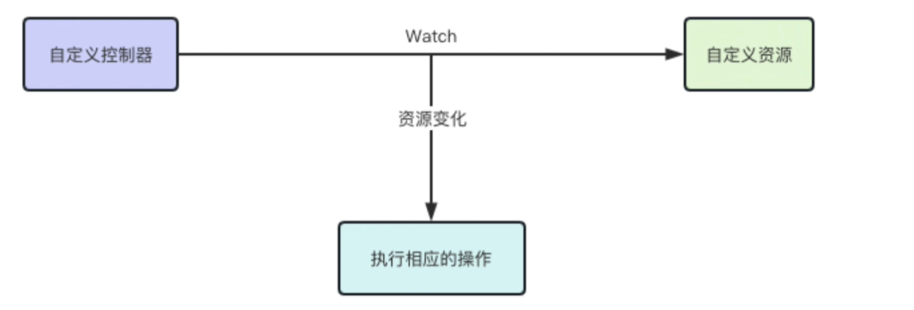
Kubebuilder 会为你自动生成与控制器相关的代码和结构，包括与 Kubernetes APl 的交互、事件监听、资源管理和错误处理等。
因此，你只需要专注于编写 Reconcile()方法中的业务代码，而不必过多关注底层的实现细节。
示例：
/*
Copyright 2024.
Licensed under the Apache License, Version 2.0 (the "License");
you may not use this file except in compliance with the License.
You may obtain a copy of the License at
http://www.apache.org/licenses/LICENSE-2.0
Unless required by applicable law or agreed to in writing, software
distributed under the License is distributed on an "AS IS" BASIS,
WITHOUT WARRANTIES OR CONDITIONS OF ANY KIND, either express or implied.
See the License for the specific language governing permissions and
limitations under the License.
*/
package myapp1
import (
"context"
appsv1 "k8s.io/api/apps/v1"
corev1 "k8s.io/api/core/v1"
"k8s.io/apimachinery/pkg/runtime"
"k8s.io/apimachinery/pkg/util/uuid"
ctrl "sigs.k8s.io/controller-runtime"
"sigs.k8s.io/controller-runtime/pkg/client"
"sigs.k8s.io/controller-runtime/pkg/log"
myapp1v1 "operator/apis/myapp1/v1"
)
// DemoReconciler reconciles a Demo object
type DemoReconciler struct {
client.Client
Scheme *runtime.Scheme
}
//+kubebuilder:rbac:groups=myapp1.anyoperator.com,resources=demoes,verbs=get;list;watch;create;update;patch;delete
//+kubebuilder:rbac:groups=myapp1.anyoperator.com,resources=demoes/status,verbs=get;update;patch
//+kubebuilder:rbac:groups=myapp1.anyoperator.com,resources=demoes/finalizers,verbs=update
// Reconcile is part of the main kubernetes reconciliation loop which aims to
// move the current state of the cluster closer to the desired state.
// TODO(user): Modify the Reconcile function to compare the state specified by
// the Demo object against the actual cluster state, and then
// perform operations to make the cluster state reflect the state specified by
// the user.
//
// For more details, check Reconcile and its Result here:
// - https://pkg.go.dev/sigs.k8s.io/controller-runtime@v0.12.1/pkg/reconcile
func (r *DemoReconciler) Reconcile(ctx context.Context, req ctrl.Request) (ctrl.Result, error) {
logger := log.FromContext(ctx)
// 1.获取demo的api实例对象
demo := &myapp1v1.Demo{}
err := r.Get(ctx, req.NamespacedName, demo) // 获取name和namespace并存到demo中
if err != nil {
logger.Error(err, "Unalbe to fetch demo")
return ctrl.Result{}, client.IgnoreNotFound(err)
}
// 2.获取当前api对象关联的运行的pod
podList := &corev1.PodList{}
//查出demo.Namespace命名空间下，标签为app=demo的pod，并存到podList中
err = r.List(ctx, podList, client.InNamespace(req.Namespace), client.MatchingLabels{"app": demo.Name})
if err != nil {
logger.Error(err, "Unalbe to list pods")
return ctrl.Result{}, err
}
courrentPodCount := len(podList.Items)
// 3. 判断是新建pod还是删除pod
if int(*demo.Spec.Replicas) > courrentPodCount { // 期望状态的pod数量大于当前pod的数量，则需要新建pod，否则删除
for i := 0; i < int(*demo.Spec.Replicas)-courrentPodCount; i++ {
// 生成所需要创建的pod的对象
pod := &corev1.Pod{
ObjectMeta: ctrl.ObjectMeta{
Name: demo.Name + "-" + string(uuid.NewUUID()[0:8]), // 名称为demo.Name+随机生成8位字符串
Namespace: demo.Namespace,
Labels: demo.Labels,
},
Spec: demo.Spec.Template.Spec,
}
// 建立关联关系
err = ctrl.SetControllerReference(demo, pod, r.Scheme)
if err != nil {
logger.Error(err, "Unalbe to set ownerReference for pod")
return ctrl.Result{}, err
}
// 创建pod
err = r.Create(ctx, pod)
if err != nil {
logger.Error(err, "Unalbe to create pod for Demo")
return ctrl.Result{}, err
}
}
} else {
// 期望状态的pod数量小于当前pod的数量，则删除pod
deletPodList := podList.Items[:courrentPodCount-int(*demo.Spec.Replicas)]
if *demo.Spec.Replicas == 0 {
deletPodList = podList.Items
}
for _, pod := range deletPodList {
err = r.Delete(ctx, &pod)
if err != nil {
logger.Error(err, "Unalbe to delete pod for Demo")
return ctrl.Result{}, err
}
}
}
return ctrl.Result{}, nil
}
// SetupWithManager sets up the controller with the Manager.
func (r *DemoReconciler) SetupWithManager(mgr ctrl.Manager) error {
return ctrl.NewControllerManagedBy(mgr).
For(&myapp1v1.Demo{}).
Owns(&corev1.Pod{}).
Owns(&corev1.Service{}).
Owns(&appsv1.Deployment{}).
Complete(r)
}
编辑好控制器逻辑之后，make run启动控制器，启动之后，逻辑才会生效
终端执行命令：make run，有正常日志输入，没有报错即成功了。
[root@k8s-master1 operator]# make run
GOBIN=/root/goproject/operator/bin go install sigs.k8s.io/controller-tools/cmd/controller-gen@v0.9.0
/root/goproject/operator/bin/controller-gen rbac:roleName=manager-role crd webhook paths="./..." output:crd:artifacts:config=config/crd/bases
/root/goproject/operator/bin/controller-gen object:headerFile="hack/boilerplate.go.txt" paths="./..."
go fmt ./...
go vet ./...
go run ./main.go
1.7324349912475054e+09 INFO controller-runtime.metrics Metrics server is starting to listen {"addr": ":8080"}
1.7324349912497094e+09 INFO setup starting manager
1.7324349912502246e+09 INFO Starting server {"path": "/metrics", "kind": "metrics", "addr": "[::]:8080"}
1.7324349912503252e+09 INFO Starting server {"kind": "health probe", "addr": "[::]:8081"}
1.732434991250581e+09 INFO Starting EventSource {"controller": "demo", "controllerGroup": "myapp1.anyoperator.com", "controllerKind": "Demo", "source": "kind source: *v1.Demo"}
1.7324349912506695e+09 INFO Starting Controller {"controller": "demo", "controllerGroup": "myapp1.anyoperator.com", "controllerKind": "Demo"}
1.7324349913514216e+09 INFO Starting workers {"controller": "demo", "controllerGroup": "myapp1.anyoperator.com", "controllerKind": "Demo", "worker count": 1}
创建pod
[root@k8s-master1 yaml]# kubectl apply -f demo.yaml
demo.myapp1.anyoperator.com/demo-sample created
[root@k8s-master1 yaml]# kubectl get pod
NAME READY STATUS RESTARTS AGE
demo-sample-27c7df32 0/1 ContainerCreating 0 7s
增加、减少副本数验证控制器逻辑
卸载自定义资源
make uninstall
或者直接kubectl命令删除
# 直接使用kubectl命令删除资源
kubectl delete Demo
构建operator镜像
1、修改文件Dockerfile文件，加上配置：
ENV GO111MODULE=on
ENV GOPROXY=https://goproxy.cn,direct
2、默认这个FROM gcr.io/distroless/static:nonroot也是下不到的替换为：
FROM anjia0532/distroless.static:nonroot
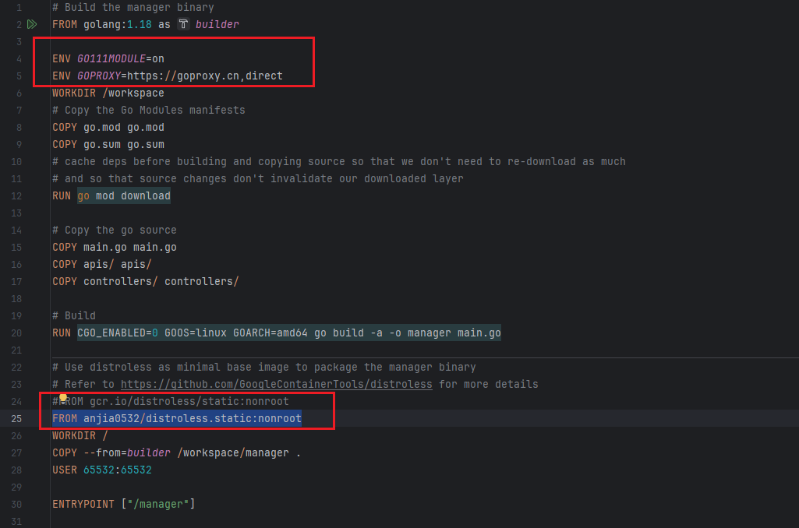
构建镜像并推送到仓库，这里我用的是我自己阿里云的镜像仓库：
make docker-build docker-push registry.cn-guangzhou.aliyuncs.com/any-any/operator:v1
但是不知道为什么，我在执行这个命令的时候有报错：（当前使用的版本是1.18）
[root@k8s-master1 operator]# make docker-build docker-push IMG=registry.cn-guangzhou.aliyuncs.com/any-any/operator:v1
/root/goproject/operator/bin/controller-gen rbac:roleName=manager-role crd webhook paths="./..." output:crd:artifacts:config=config/crd/bases
/root/goproject/operator/bin/controller-gen object:headerFile="hack/boilerplate.go.txt" paths="./..."
go fmt ./...
go vet ./...
GOBIN=/root/goproject/operator/bin go install sigs.k8s.io/controller-runtime/tools/setup-envtest@latest
go: sigs.k8s.io/controller-runtime/tools/setup-envtest@latest (in sigs.k8s.io/controller-runtime/tools/setup-envtest@v0.0.0-20241120211254-b88f351e4ba2): go.mod:3: invalid go version '1.23.0': must match format 1.23
make: *** [/root/goproject/operator/bin/setup-envtest] Error 1
我把makefile文件中的GOBIN对应的配置改为指定的版本也不行：
......
.PHONY: envtest
envtest: $(ENVTEST) ## Download envtest-setup locally if necessary.
$(ENVTEST): $(LOCALBIN)
GOBIN=$(LOCALBIN) go install sigs.k8s.io/controller-runtime/tools/setup-envtest@0.12.1
有新的报错（暂未解决，不知道是不是环境的问题）：
[root@k8s-master1 operator]# make docker-build docker-push IMG=registry.cn-guangzhou.aliyuncs.com/any-any/operator:v1
/root/goproject/operator/bin/controller-gen rbac:roleName=manager-role crd webhook paths="./..." output:crd:artifacts:config=config/crd/bases
/root/goproject/operator/bin/controller-gen object:headerFile="hack/boilerplate.go.txt" paths="./..."
go fmt ./...
go vet ./...
GOBIN=/root/goproject/operator/bin go install sigs.k8s.io/controller-runtime/tools/setup-envtest@0.12.1
go: sigs.k8s.io/controller-runtime/tools/setup-envtest@0.12.1: sigs.k8s.io/controller-runtime/tools/setup-envtest@0.12.1: invalid version: git ls-remote -q origin in /root/goproject/pkg/mod/cache/vcs/70a2f6061391c3b312ddbb2e0ac9229b5beb48ca9c658244ede252b1b7ccb196: exit status 128:
git: 'remote-https' is not a git command. See 'git --help'.
make: *** [/root/goproject/operator/bin/setup-envtest] Error 1
无奈之下，直接使用docker build命令打包镜像
[root@k8s-master1 operator]# docker build -t registry.cn-guangzhou.aliyuncs.com/any-any/operator:v1 ./
Sending build context to Docker daemon 668.2kB
Step 1/16 : FROM golang:1.18 as builder
1.18: Pulling from library/golang
bbeef03cda1f: Pull complete
f049f75f014e: Pull complete
56261d0e6b05: Pull complete
9bd150679dbd: Pull complete
bfcb68b5bd10: Pull complete
06d0c5d18ef4: Pull complete
cc7973a07a5b: Pull complete
Digest: sha256:50c889275d26f816b5314fc99f55425fa76b18fcaf16af255f5d57f09e1f48da
Status: Downloaded newer image for golang:1.18
---> c37a56a6d654
......
手动push镜像：
docker push registry.cn-guangzhou.aliyuncs.com/any-any/operator:v1
[root@k8s-master1 operator]# docker push registry.cn-guangzhou.aliyuncs.com/any-any/operator:v1
The push refers to repository [registry.cn-guangzhou.aliyuncs.com/any-any/operator]
27d6f46f4af9: Pushing [============================> ] 27.03MB/46.88MB
b336e209998f: Pushed
f4aee9e53c42: Pushed
1a73b54f556b: Pushed
2a92d6ac9e4f: Pushed
bbb6cacb8c82: Pushed
ac805962e479: Pushed
af5aa97ebe6c: Pushed
4d049f83d9cf: Pushed
945d17be9a3e: Pushing [=> ] 43.52kB/1.46MB
49626df344c9: Pushing [==================================================>] 40.96kB
5cc2a122cebb: Pushing [> ] 3
部署operator镜像
部署有两种方案
make deploy
使用项目自带的deploy指令，这种方式是将operator部署到本地集群中，其实和make run差不多
在项目目录下：
make deploy IMG=registry.cn-guangzhou.aliyuncs.com/any-any/operator:v1
[root@k8s-master1 operator]# make deploy IMG=registry.cn-guangzhou.aliyuncs.com/any-any/operator:v1
/root/goproject/operator/bin/controller-gen rbac:roleName=manager-role crd webhook paths="./..." output:crd:artifacts:config=config/crd/bases
cd config/manager && /root/goproject/operator/bin/kustomize edit set image controller=registry.cn-guangzhou.aliyuncs.com/any-any/operator:v1
/root/goproject/operator/bin/kustomize build config/default | kubectl apply -f -
namespace/operator-system created
customresourcedefinition.apiextensions.k8s.io/demoes.myapp1.anyoperator.com created
serviceaccount/operator-controller-manager created
role.rbac.authorization.k8s.io/operator-leader-election-role created
clusterrole.rbac.authorization.k8s.io/operator-manager-role created
clusterrole.rbac.authorization.k8s.io/operator-metrics-reader created
clusterrole.rbac.authorization.k8s.io/operator-proxy-role created
rolebinding.rbac.authorization.k8s.io/operator-leader-election-rolebinding created
clusterrolebinding.rbac.authorization.k8s.io/operator-manager-rolebinding created
clusterrolebinding.rbac.authorization.k8s.io/operator-proxy-rolebinding created
configmap/operator-manager-config created
service/operator-controller-manager-metrics-service created
deployment.apps/operator-controller-manager created
deployment.apps/operator-controller-manager created
# 查看自定义的资源
[root@k8s-master1 operator]# kubectl get crd|grep demo
demoes.myapp1.anyoperator.com 2024-11-24T14:47:38Z
[root@k8s-master1 operator]# kubectl api-resources|grep demo
demoes myapp1.anyoperator.com/v1 true Demo
创建资源测试：demo.yaml为上面的yaml文件
[root@k8s-master1 operator]# kubectl apply -f yaml/demo.yaml
demo.myapp1.anyoperator.com/demo-sample created
[root@k8s-master1 operator]#
[root@k8s-master1 operator]# kubectl get pod
NAME READY STATUS RESTARTS AGE
demo-sample-02874d18 0/1 ContainerCreating 0 14s
demo-sample-d00875f4 0/1 ContainerCreating 0 14s
注意：这里如果使用**make deploy**失败的，可直接使用Makefile文件中的deploy配置的命令直接执行(两条命令都是在kube-oprator1项目根目录下执行！)：
......
.PHONY: deploy
deploy: manifests kustomize ## Deploy controller to the K8s cluster specified in ~/.kube/config.
cd config/manager && $(KUSTOMIZE) edit set image controller=${IMG}
$(KUSTOMIZE) build config/default | kubectl apply -f -
......
拿出来之后的命令，将镜像替换为你自己的镜像即可：
cd config/manager && kustomize edit set image controller=registry.cn-guangzhou.aliyuncs.com/any-any/operator:v1
kustomize build config/default | kubectl apply -f -
yaml部署
我们需要的当然是把写的operator分发到别的集群部署。
通过分析make deploy脚本，来编写yaml
这个脚本的本质就是用kustomize对config下的manager和default中的yaml进行变量替换
然后整合成一个yaml，传给kubectl apply执行，所以，我们只要执行下这两行就可以得到我们想要的yaml文件，然后就可以随便到别的集群执行了哦
cd config/manager && kustomize edit set image controller=registry.cn-guangzhou.aliyuncs.com/any-any/operator:v1
cd ../.. && /usr/local/bin/kustomize build config/default > demo-operator.yaml
demo-operator.yaml文件信息较多，就不展示
然后就直接拷贝demo-operator.yaml文件到其他集群下进行进行创建
kubectl apply -f demo-operator.yaml
再然后创建对应的pod即可
kubectl apply -f demo.yaml
CRD字段验证
通过注释
可以通过注释来限制字段，更多的注释作用参考文档：https://book.kubebuilder.io/reference/markers/crd-validation.html
示例：
增加特定规范的注释用于限制了 Port 的取值在1111-2222之间
type DemoSpec struct {
// INSERT ADDITIONAL SPEC FIELDS - desired state of cluster
// Important: Run "make" to regenerate code after modifying this file
// Foo is an example field of Redis. Edit redis_types.go to remove/update
//Foo string `json:"foo,omitempty"`
// validation: https://book.kubebuilder.io/reference/markers/crd-validation.html
//+kubebuilder:validation:Minimum:=1111
//+kubebuilder:validation:Maximum:=2222
Port int `json:"port,omitempty"`
Replicas int `json:"replicas,omitempty"`
}
重新安装CRD
make install
make uninstall
测试验证：
apiVersion: myapp1.anyoperator.com/v1
kind: Demo
metadata:
name: demo-sample
namespace: default
labels:
app: demo-sample
spec:
replicas: 2
port: 9999
template:
spec:
containers:
- name: nginx
image: nginx:latest
ports:
- containerPort: 80
此时按照上面的yaml创建资源，可以看到对应类似的限制报错：
kubectl apply -f demo.yaml
The Redis "shadow" is invalid: spec.port: Invalid value: 9999: spec.port in body should be less than or equal to 2222
webhook(修改/校验)
https://kubernetes.io/zh-cn/docs/reference/access-authn-authz/extensible-admission-controllers/
operator中的webhook也是很重要的一块功能。也是相对比较独立的模块。准入 Webhook 是一种用于接收准入请求并对其进行处理的 HTTP 回调机制。 可以定义两种类型的准入 Webhook：
- Validating Admission Webhook：在资源创建、更新或删除时进行 验证，确保资源满足一定的规则，拒绝不符合要求的请求。
- Mutating Admission Webhook：在资源创建或更新时，可以修改资源对象的内容。
在完成了所有对象修改并且 API 服务器也验证了所传入的对象之后， 验证性质的 Webhook 会被调用，并通过拒绝请求的方式来强制实施自定义的策略。webhook是一个callback，注册到k8s的api-server上。当某个特定的时间发生时，api server就会查询注册的webhook，并根据一些逻辑确认转发消息给某个webhook。
在k8s中，有3类webhook：admission webhook, authorization webhook 和 CRD conversion webhook。
在kubebuilder的底层controller-runtime框架里，支持admission webhooks 和 CRD conversion webhooks。
这讲的是admission webhook。（以下的webhook就是指admission webhook）。CRD conversion webhooks用于多版本api转换时，目前入门阶段先不讨论这个话题。
admission webhook又可以分成2类：
validation：校验类的webhook，只读取信息，做校验判断，不会改变消息，称为validating类型。这里的校验就可以写复杂的业务了，前面的代码里我们也使用注解的方式配置过简单的validation校验。
通过注解置Image字段为必填：
// +kubebuilder:validation:Required
Image string `json:"image,omitempty"`
mutating：可修改对象的webhook，比如设置默认值功能。
执行顺序：
先执行mutating webhook，后执行validating webhook
就是说先设置，后校验。不需要担心，校验完了之后，另一个webhook又修改了值。
工作流程
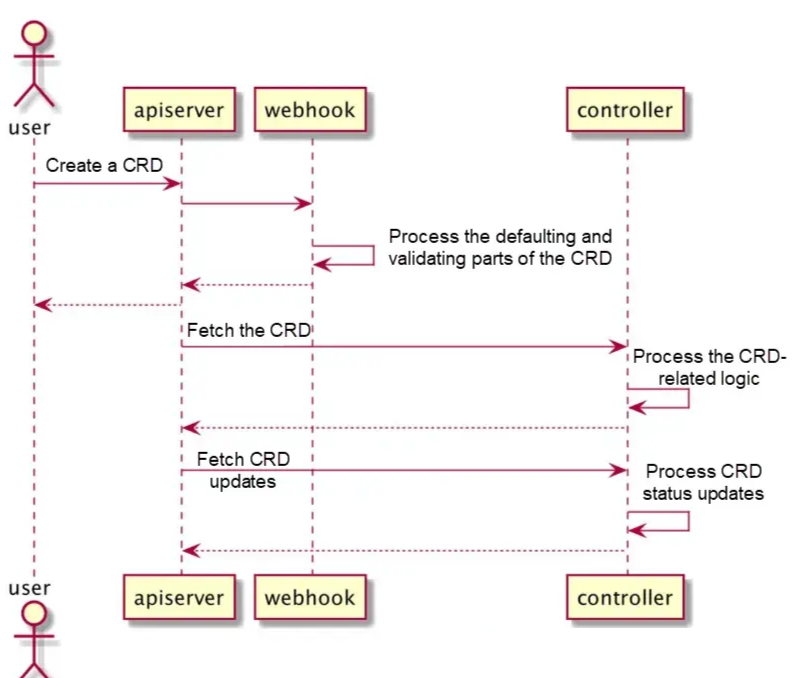
- 用户创建一个CRD的实例
- k8s api-server将这个请求转发给对应的webhook
- webhook完成默认的参数配置操作，并进行一些参数校验操作。成功之后将cr返回给api-server。api-server进行落库
- 我们编写的controller的在后台监控cr，拉取cr内容，并执行我们编写的逻辑
- cr的执行结果同步回api-server
创建webhook
和创建api一样，webhook也由kubebuilder创建脚手架代码。
在之前的代码框架上继续操作：
# GVK 需要和创建 API 时保持一致
kubebuilder create webhook --group myapp1 --version v1 --kind Demo --defaulting --programmatic-validation
- --defaulting：会创建配置默认值的webhook
- --programmatic-validation：创建有校验功能的webhook
[root@k8s-master1 operator]# kubebuilder create webhook --group myapp1 --version v1 --kind Demo --defaulting --programmatic-validation
Writing kustomize manifests for you to edit...
Writing scaffold for you to edit...
apis/myapp1/v1/demo_webhook.go
Update dependencies:
$ go mod tidy
Running make:
$ make generate
/root/goproject/operator/bin/controller-gen object:headerFile="hack/boilerplate.go.txt" paths="./..."
Next: implement your new Webhook and generate the manifests with:
$ make manifests
kubebuilder命令的参数
Flags:
--conversion if set, scaffold the conversion webhook # 就是创建CRD conversion webhooks。用于多版本api转换时。
--defaulting if set, scaffold the defaulting webhook
--force attempt to create resource even if it already exists
--group string resource Group
-h, --help help for webhook
--kind string resource Kind
--plural string resource irregular plural form
--programmatic-validation if set, scaffold the validating webhook
--version string resource Version
执行完之后，看看生成的文件以及main.go生成的代码：
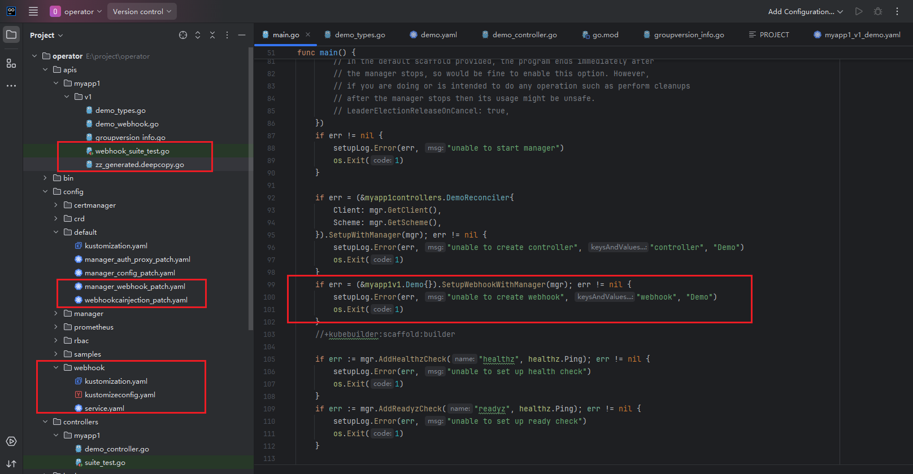
main.go所生成的代码的作用就是在manager中注册了我们的webhook
- Config 目录下增加了 Webhook 相关配置
- internal/webhook 目录下增加了 Webhook 默认实现
代码实现
主要关注的是写业务逻辑校验代码的文件：apis/myapp1/v1/demo_webhook.go。kubebuilder命令创建webhook的时候携带了参数：--defaulting ，所以Demo实现了webhook.Defaulter接口。即拥有了配置crd的字段属性的默认值的能力。主要函数方法：
- Default：用于给对象设置一些默认值，如果对象中某些字段没有被明确设置，可以通过这个 webhook 来设置它们的默认值，即对应 mutating webhook
- ValidateCreate、ValidateUpdate、ValidateDelete：这些方法是用于验证的。它们分别在对象创建、更新和删除之前被调用，用于确保对象符合特定的验证规则，对应 validating webhook
参考案例：
package v1
import (
"k8s.io/apimachinery/pkg/api/errors"
"k8s.io/apimachinery/pkg/runtime"
"k8s.io/apimachinery/pkg/runtime/schema"
"k8s.io/apimachinery/pkg/util/validation/field"
ctrl "sigs.k8s.io/controller-runtime"
logf "sigs.k8s.io/controller-runtime/pkg/log"
"sigs.k8s.io/controller-runtime/pkg/webhook"
)
// log is for logging in this package.
var demolog = logf.Log.WithName("demo-resource")
func (r *Demo) SetupWebhookWithManager(mgr ctrl.Manager) error {
return ctrl.NewWebhookManagedBy(mgr).
For(r).
Complete()
}
// TODO(user): EDIT THIS FILE! THIS IS SCAFFOLDING FOR YOU TO OWN!
//+kubebuilder:webhook:path=/mutate-myapp1-anyoperator-com-v1-demo,mutating=true,failurePolicy=fail,sideEffects=None,groups=myapp1.anyoperator.com,resources=demoes,verbs=create;update,versions=v1,name=mdemo.kb.io,admissionReviewVersions=v1
var _ webhook.Defaulter = &Demo{}
// 配置默认值
// Default implements webhook.Defaulter so a webhook will be registered for the type
func (r *Demo) Default() {
demolog.Info("default", "name", r.Name)
// TODO(user): fill in your defaulting logic.
if r.Spec.Replicas == nil {
r.Spec.Replicas = new(int32)
*r.Spec.Replicas = 1
demolog.Info("配置默认值", "replicas", *r.Spec.Replicas)
}
}
// TODO(user): change verbs to "verbs=create;update;delete" if you want to enable deletion validation.
//+kubebuilder:webhook:path=/validate-myapp1-anyoperator-com-v1-demo,mutating=false,failurePolicy=fail,sideEffects=None,groups=myapp1.anyoperator.com,resources=demoes,verbs=create;update,versions=v1,name=vdemo.kb.io,admissionReviewVersions=v1
var _ webhook.Validator = &Demo{}
// ValidateCreate implements webhook.Validator so a webhook will be registered for the type
func (r *Demo) ValidateCreate() error {
demolog.Info("validate create", "name", r.Name)
// TODO(user): fill in your validation logic upon object creation.
return r.validate()
}
// ValidateUpdate implements webhook.Validator so a webhook will be registered for the type
func (r *Demo) ValidateUpdate(old runtime.Object) error {
demolog.Info("validate update", "name", r.Name)
// TODO(user): fill in your validation logic upon object update.
return nil
}
// ValidateDelete implements webhook.Validator so a webhook will be registered for the type
func (r *Demo) ValidateDelete() error {
demolog.Info("validate delete", "name", r.Name)
// TODO(user): fill in your validation logic upon object deletion.
return nil
}
// 进行副本数大小限制， 大于5个就报错
func (r *Demo) validate() error {
var allErrs field.ErrorList
if *r.Spec.Replicas > 5 {
err := field.Invalid(field.NewPath("spec").Child("replicas"),
*r.Spec.Replicas,
"副本数不能大于5")
allErrs = append(allErrs, err)
}
if len(allErrs) == 0 {
demolog.Info("参数合法")
return nil
}
return errors.NewInvalid(schema.GroupKind{
Group: "myapp1",
Kind: "Demo"},
r.Name, allErrs)
}
在部署webhook前，还需要修改下config/default/kustomization.yaml与config/crd/kustomization.yaml的配置
config/default/kustomization.yaml下面的这些配置全部放开：
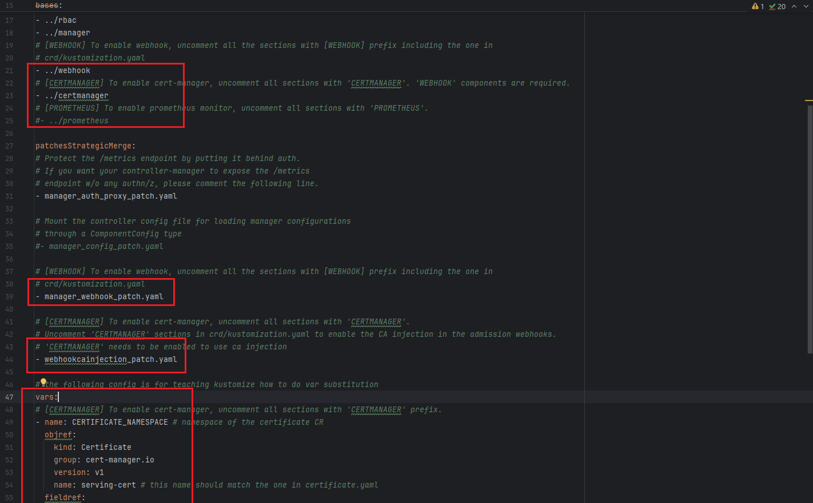
在config/crd/kustomization.yaml中，注释放开
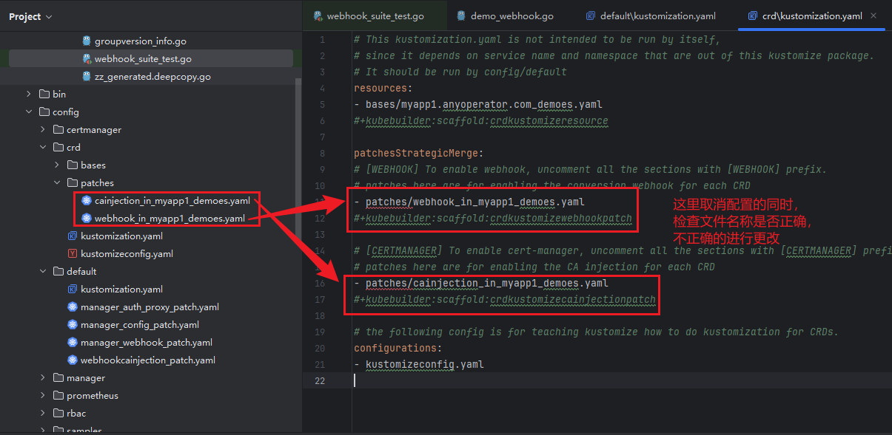
部署准备
安装cert-manager
因为api-server是通过https调用webhook，所以需要部署cert-manager来自动管理证书。
这也是kubebuilder官方建议的方案，我的测试环境是1.23的k8s，所以选择1.8版本的cert manager。
kubectl apply -f https://github.com/cert-manager/cert-manager/releases/download/v1.8.0/cert-manager.yaml
[root@k8s-master1 operator]# kubectl get all -n cert-manager
NAME READY STATUS RESTARTS AGE
pod/cert-manager-64d9bc8b74-r2865 1/1 Running 1 (83m ago) 47h
pod/cert-manager-cainjector-6db6b64d5f-dbh8m 1/1 Running 1 (83m ago) 47h
pod/cert-manager-webhook-6c9dd55dc8-zm6jh 1/1 Running 1 (83m ago) 47h
NAME TYPE CLUSTER-IP EXTERNAL-IP PORT(S) AGE
service/cert-manager ClusterIP 10.1.168.28 <none> 9402/TCP 47h
service/cert-manager-webhook ClusterIP 10.1.237.251 <none> 443/TCP 47h
NAME READY UP-TO-DATE AVAILABLE AGE
deployment.apps/cert-manager 1/1 1 1 47h
deployment.apps/cert-manager-cainjector 1/1 1 1 47h
deployment.apps/cert-manager-webhook 1/1 1 1 47h
NAME DESIRED CURRENT READY AGE
replicaset.apps/cert-manager-64d9bc8b74 1 1 1 47h
replicaset.apps/cert-manager-cainjector-6db6b64d5f 1 1 1 47h
replicaset.apps/cert-manager-webhook-6c9dd55dc8 1 1 1 47h
清理环境
先把之前测试的资源全部删除
删除Operator
kubectl delete -f demo.yaml
删除crd
make uninstall
重新部署
make docker-build docker-push IMG=registry.cn-guangzhou.aliyuncs.com/any-any/operator:v2
# make命不行的话就直接docker build
# docker build -t registry.cn-guangzhou.aliyuncs.com/any-any/operator:v2 .
make deploy IMG=registry.cn-guangzhou.aliyuncs.com/any-any/operator:v2
[root@k8s-master1 operator]# kubectl get all -n operator-system
NAME READY STATUS RESTARTS AGE
pod/operator-controller-manager-688689cbd8-z986g 1/2 ImagePullBackOff 0 24m
pod/operator-controller-manager-9484dd4c8-f65l9 1/2 ImagePullBackOff 0 3h23m
NAME TYPE CLUSTER-IP EXTERNAL-IP PORT(S) AGE
service/operator-controller-manager-metrics-service ClusterIP 10.1.24.59 <none> 8443/TCP 3h23m
service/operator-webhook-service ClusterIP 10.1.16.157 <none> 443/TCP 24m
NAME READY UP-TO-DATE AVAILABLE AGE
deployment.apps/operator-controller-manager 0/1 1 0 3h23m
NAME DESIRED CURRENT READY AGE
replicaset.apps/operator-controller-manager-688689cbd8 1 1 0 24m
replicaset.apps/operator-controller-manager-9484dd4c8 1 1 0 3h23m
[root@k8s-master1 operator]# kubectl get all -n operator-system
NAME READY STATUS RESTARTS AGE
pod/operator-controller-manager-688689cbd8-z986g 1/2 ImagePullBackOff 0 24m
pod/operator-controller-manager-9484dd4c8-f65l9 1/2 ImagePullBackOff 0 3h23m
NAME TYPE CLUSTER-IP EXTERNAL-IP PORT(S) AGE
service/operator-controller-manager-metrics-service ClusterIP 10.1.24.59 <none> 8443/TCP 3h23m
service/operator-webhook-service ClusterIP 10.1.16.157 <none> 443/TCP 24m
NAME READY UP-TO-DATE AVAILABLE AGE
deployment.apps/operator-controller-manager 0/1 1 0 3h23m
NAME DESIRED CURRENT READY AGE
replicaset.apps/operator-controller-manager-688689cbd8 1 1 0 24m
replicaset.apps/operator-controller-manager-9484dd4c8 1 1 0 3h23m
镜像无法下载：gcr.io/kubebuilder/kube-rbac-proxy:v0.12.0
可以尝试改为：anjia0532/kubebuilder.kube-rbac-proxy:v0.12.0
至此需要使用其他的魔法方法进行镜像下载了……
注意：本地调试模式需要注释掉main.go中的**SetupWebhookWithManager，**不然的话执行make run会报错：
1.7324689423478022e+09 INFO Wait completed, proceeding to shutdown the manager
1.7324689423478847e+09 ERROR setup problem running manager {"error": "open /tmp/k8s-webhook-server/serving-certs/tls.crt: no such file or directory"}
注释：
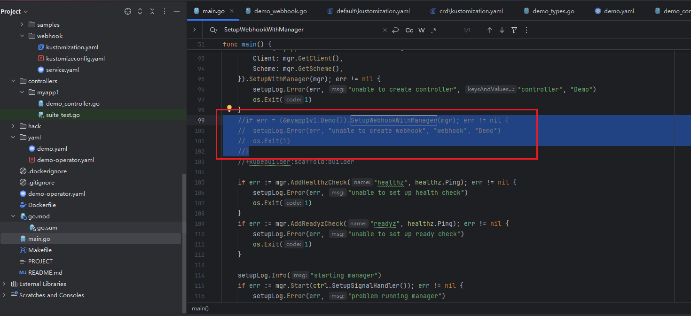
make install
遇到的问题：
当尝试启动pod的时候，其中遇到的operator-system下的pod：operator-controller-manager-999956d9d-bvpnz报错：
1.732640159896862e+09 DEBUG controller-runtime.webhook.webhooks wrote response {"webhook": "/validate-myapp1-anyoperator-com-v1-demo", "code": 200, "reason": "", "UID": "c46b7e39-8874-4800-b8c9-b5047290fbe7", "allowed": true}
1.7326401599092863e+09 ERROR Unalbe to delete pod for Demo {"controller": "demo", "controllerGroup": "myapp1.anyoperator.com", "controllerKind": "Demo", "demo": {"name":"demo-sample","namespace":"default"}, "namespace": "default", "name": "demo-sample", "reconcileID": "fc290436-831c-41f3-acde-411406ac5d81", "error": "pods \"demo-sample-14436f44\" is forbidden: User \"system:serviceaccount:operator-system:operator-controller-manager\" cannot delete resource \"pods\" in API group \"\" in the namespace \"default\""}
意思就是这个账户：operator-controller-manager没有对应的权限
排查：
1、先查看operator-system命名空间之下，有没有这个账户：
kubectl get ServiceAccount -n operator-system |grep controller-manager
2、查看角色绑定
kubectl get ClusterRoleBinding -n operator-system |grep manager-rolebinding
kubectl describe ClusterRole -n operator-system manager-role
3、需要去查看**config/rbac/下**的role_binding.yaml、service_account.yaml、role.yaml三个文件了：
service_account.yaml没有中没有创建operator-controller-manager用户的，手工进行apply创建，（我这里的就创建不对）
# apiVersion: v1
# kind: ServiceAccount
# metadata:
# name: controller-manager
# namespace: system
# 上面是他原来创建的用户, 账号跟
apiVersion: v1
kind: ServiceAccount
metadata:
name: operator-controller-manager
namespace: operator-system
role.yaml需要加上对应的权限：
---
apiVersion: rbac.authorization.k8s.io/v1
kind: ClusterRole
metadata:
creationTimestamp: null
name: manager-role
rules:
- apiGroups:
- myapp1.anyoperator.com
resources:
- demoes
verbs:
- create
- delete
- get
- list
- patch
- update
- watch
- apiGroups:
- myapp1.anyoperator.com
resources:
- demoes/finalizers
verbs:
- update
- apiGroups:
- myapp1.anyoperator.com
resources:
- demoes/status
verbs:
- get
- patch
- update
# 上面的默认生成的，加上下面的这些权限
- apiGroups: ["apps"]
resources: ["deployments"]
verbs: ["get", "list", "watch"]
- apiGroups: [""]
resources: ["pods"]
verbs: ["get", "list", "watch","create","delete"]
测试参数校验功能
1、当注释yaml文件中的 Replicas配置时operator-system下的pod：operator-controller-manager-999956d9d-bvpnz报错：
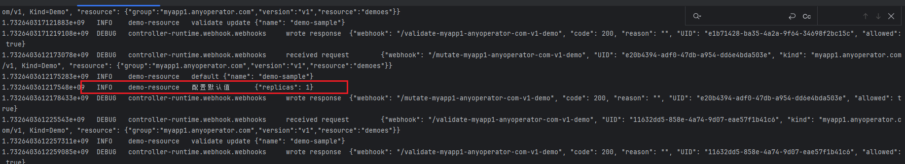
将yaml中的replicas字段设置为10，超过代码控制中的最大值
查看日志，直接报错
遗留问题：validate()中的策略不生效，待求证
如果遇到不生效的情况，直接可以查看对应的ValidatingWebhookConfiguration资源的配置
kubectl get ValidatingWebhookConfiguration -o yaml'
主要查看下面这两个地方的规则是否正常：
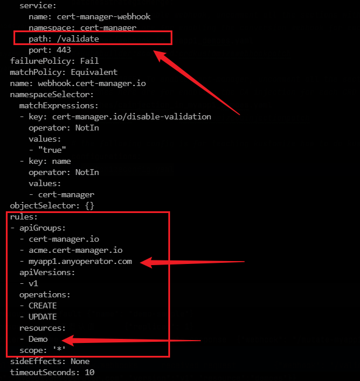
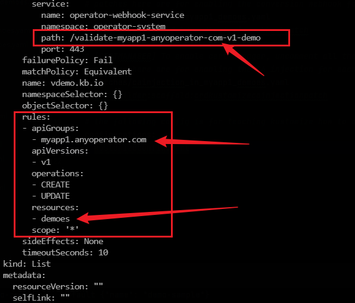
参考
https://www.yuque.com/duiniwukenaihe/hg6ymd/nf8ghd#GeBJ6
https://juejin.cn/post/7348004746206642213
https://juejin.cn/post/7031577709226491934?searchId=202411252241309C4174B77C3D1E3EAECE#heading-18
https://juejin.cn/post/6962874953154691079?searchId=20241125223744DF3932221580F239EB3D#heading-29
operator-sdk实战
Operator 实现类型
Operator SDK 支持三种主要实现方式，适配不同场景和技术栈。
- Go-based Operators：基于 Go 的 Operator 直接使用 controller-runtime，适合复杂业务逻辑和高度自定义需求。
- Ansible-based Operators：Ansible Operator 利用 Ansible playbook 和角色，无需 Go 编程，适合已有自动化脚本的场景。
- Helm-based Operators：Helm Operator 基于现有 Helm charts，适合已有 Helm charts 的应用，快速实现 Operator 化。
安装
参考官网：https://sdk.operatorframework.io/docs/installation/#install-from-github-release
operator-sdk version
相关命令：
| init | 初始化新的 Operator 项目 |
|---|---|
create api |
创建 Kubernetes API 或 Webhook |
bundle |
管理 Operator bundle 元数据 |
generate |
生成各种制品（CRD、manifests） |
run |
在不同环境中运行 Operator |
scorecard |
根据最佳实践测试 Operator bundle |
olm |
管理 OLM 安装和集成 |
cleanup |
管理 OLM 安装和集成 |
pkgman-to-bundle |
从包 manifests 迁移到 bundles |
创建项目
# 创建项目目录
mkdir -p ~/projects/memcached-operator
cd ~/projects/memcached-operator
# 初始化项目
operator-sdk init --domain example.com --repo github.com/example/memcached-operator
创建API
该命令会自动生成自定义资源定义（CRD）、控制器逻辑及相关测试文件。
# 创建API
operator-sdk create api --group cache --version v1alpha1 --kind Memcached --resource --controller